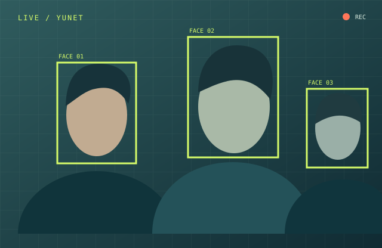
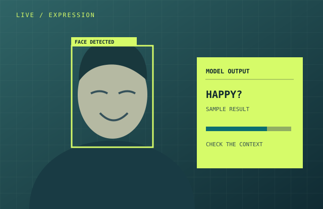
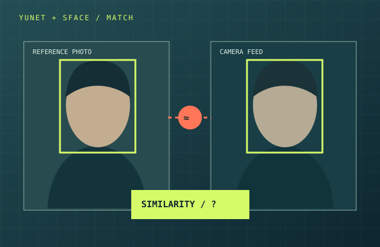

OpenCV 是什麼？
OpenCV 是開放原始碼的電腦視覺與機器學習軟體函式庫。它提供讀取影像、處理畫面、使用攝影機與執行模型等工具，讓我們不用從零打造每一個步驟。
查看 OpenCV 官方介紹一門課，四種看見方式。
01 / THE IDEA
攝影機只取得畫面。讓畫面變成可分析的資料，才是電腦視覺的起點。
OpenCV 是開放原始碼的電腦視覺與機器學習軟體函式庫。它提供讀取影像、處理畫面、使用攝影機與執行模型等工具，讓我們不用從零打造每一個步驟。
查看 OpenCV 官方介紹OpenCV 負責取得與處理畫面，也能執行模型；模型則依訓練結果做分類或辨識。本教材使用 OpenCV Zoo 收錄的模型與範例。
從掃描 QR Code、讀取文件，到機器人與影像輔助工具，都需要讓程式理解畫面。學會這套流程，也就能開始設計自己的視覺應用。
02 / GET READY
每位學生在自己的 Windows 電腦，用 VS Code、AI Agent、uv 與 Python 執行程式。這個網站是教材，不會要求瀏覽器直接開啟攝影機。
安裝 VS Code、Python 與 uv，並確認攝影機能被 Windows 使用。uv 的安裝方式依官方安裝指南操作。
在 VS Code 終端機執行右側指令。uv 會管理專案環境與套件；每個人都在自己的資料夾練習。
先執行下方的四個基礎程式並修改參數；進入核心實作時，再把提示詞交給 AI Agent，親自驗收攝影機畫面。
建立專案並安裝基本套件，新增資料夾mycv，並用VsCode開啟
uv init
uv add opencv-python
uv run python -c "import cv2; print(cv2.__version__)"看到 OpenCV 版本號，就代表套件已可匯入。模型檔依各課連結取得；若 Agent 加入其他依賴，請它說明原因並使用 uv add。uv 專案操作說明 ↗
03 / FIRST STEPS
這四個練習不需要模型。將程式碼存成標示的檔名，放在剛才建立的 vision-lab 根目錄；在同一個目錄執行指令。每段程式都能獨立執行，先觀察效果，再試著改一行。
從編號 0 的攝影機不斷取得影格並顯示。按 q 結束；若是外接攝影機，可試著把 0 改成 1。後面三個練習也能用相同方式調整攝影機設定。
檔名 basic_camera.py
執行 uv run python basic_camera.py
觀察：為何沒有迴圈，就只會取得一張畫面？
import cv2
# 0 通常代表預設攝影機；若有多台攝影機，可嘗試改成 1。
camera = cv2.VideoCapture(0)
# Windows 若開啟鏡頭很慢，可試試 cv2.VideoCapture(0, cv2.CAP_DSHOW)。
# cv2.CAP_DSHOW 指定 DirectShow 後端；是否更快會因電腦而異。
if not camera.isOpened():
raise SystemExit("無法開啟攝影機，請檢查權限或是否被其他程式占用。")
try:
while True:
# read() 每次讀取一張影格；success 表示是否成功。
success, frame = camera.read()
if not success:
print("無法讀取攝影機畫面。")
break
cv2.imshow("Camera", frame) # 顯示目前這張影格。
# waitKey(1) 讓視窗更新，也等待鍵盤輸入約 1 毫秒。
if cv2.waitKey(1) & 0xFF == ord("q"):
break # 按 q 離開迴圈。
finally:
camera.release() # 即使讀取失敗，也要歸還攝影機。
cv2.destroyAllWindows() # 關閉 OpenCV 建立的視窗。將彩色影格轉成灰階，觀察顏色資訊消失後留下的明暗。這裡的「黑白」是有深淺的灰階，不是只有純黑與純白。
檔名 basic_grayscale.py
執行 uv run python basic_grayscale.py
把程式中的 processed = ... 換成下列其中一行：
processed = cv2.GaussianBlur(frame, (21, 21), 0)processed = cv2.bitwise_not(frame)processed = cv2.Canny(cv2.cvtColor(frame, cv2.COLOR_BGR2GRAY), 80, 160)一次只選一行，再比較畫面差異；Canny 的兩個數字是邊緣偵測門檻。
import cv2
# 建立攝影機物件；0 是預設攝影機編號。
camera = cv2.VideoCapture(0)
if not camera.isOpened():
raise SystemExit("無法開啟攝影機，請檢查攝影機權限。")
try:
while True:
success, frame = camera.read()
if not success:
print("無法讀取攝影機畫面。")
break
# 攝影機的彩色畫面通常是 BGR 通道順序。
# COLOR_BGR2GRAY 將它轉成單通道灰階影像。
# 想試柔焦、負片或邊緣效果，只需改下一行。
processed = cv2.cvtColor(frame, cv2.COLOR_BGR2GRAY)
cv2.imshow("Grayscale", processed)
# 每次迴圈檢查鍵盤；按 q 就結束。
if cv2.waitKey(1) & 0xFF == ord("q"):
break
finally:
camera.release()
cv2.destroyAllWindows()預設把畫面左右翻轉，讓你移動左手時，螢幕中的影像像照鏡子一樣移動。親自把參數改成 0 或 -1，看看畫面如何改變。
檔名 basic_flip.py
執行 uv run python basic_flip.py
試試看：舉起左手，分別在參數 1、0、-1 下觀察畫面。
import cv2
# 開啟預設攝影機。
camera = cv2.VideoCapture(0)
if not camera.isOpened():
raise SystemExit("無法開啟攝影機，請檢查攝影機權限。")
try:
while True:
success, frame = camera.read()
if not success:
print("無法讀取攝影機畫面。")
break
# flip() 的第二個參數決定翻轉方向：
# 1：左右翻轉，像照鏡子；0：上下翻轉。
# -1：左右與上下都翻轉。試著改成 0 或 -1！
mirrored = cv2.flip(frame, 1)
cv2.imshow("Mirror", mirrored)
if cv2.waitKey(1) & 0xFF == ord("q"):
break
finally:
camera.release()
cv2.destroyAllWindows()按 s 將當下影格存成工作目錄中的 snapshot.png，按 q 離開。再次按 s 會覆蓋前一張；想保留照片，先替檔案改名。
檔名 basic_snapshot.py
執行 uv run python basic_snapshot.py
觀察：存下來的是哪一個瞬間？檔案實際出現在哪裡？
import cv2
# 檔名沒有資料夾路徑，會存到執行指令時的工作目錄。
filename = "snapshot.png"
camera = cv2.VideoCapture(0)
if not camera.isOpened():
raise SystemExit("無法開啟攝影機，請檢查攝影機權限。")
try:
while True:
success, frame = camera.read()
if not success:
print("無法讀取攝影機畫面。")
break
cv2.imshow("Snapshot - s: save, q: quit", frame)
key = cv2.waitKey(1) & 0xFF
if key == ord("q"):
break
if key == ord("s"):
# imwrite() 將目前影格存成 PNG；同名檔案會被覆蓋。
if cv2.imwrite(filename, frame):
print(f"已儲存：{filename}")
else:
print("儲存失敗，請檢查資料夾權限。")
finally:
camera.release()
cv2.destroyAllWindows()04 / CORE LABS
老師先帶大家完成基本功能。每課都附一段可直接交給 Agent 的提示詞與成功條件；部分課程接著提供學生自行探索的延伸作品。
CLASSIFICATION / 核心實作
把生活用品拿到攝影機前，觀察模型如何替整個畫面選出類別。
影像分類替整張畫面選類別，不會直接告訴你物品在畫面的哪裡。比較更換背景、角度與光線後，結果有沒有改變。
請在目前工作目錄的根目錄建立 `camera_classification.py`。我正在 Windows 的 VS Code 專案中使用 uv 與 Python。請參考 OpenCV Zoo 官方 MobileNet 影像分類範例，建立使用電腦攝影機的即時影像分類程式。請先確認官方模型取得方式與授權，使用 OpenCV DNN 與 CPU 執行，不要假設有 GPU。以 uv add 管理依賴，說明每個新增檔案與模型放置位置。畫面請顯示分類標籤與分數，提供清楚的退出按鍵；攝影機或模型讀取失敗時顯示可理解的錯誤。最後給我 uv run 執行指令、驗收步驟，並用高中生能懂的話解釋「影像分類」在做什麼。不要使用雲端辨識 API。
比較模型最有把握的三個答案，而不只看第一名。
請在目前工作目錄的根目錄建立 `classification_top3.py`，以已完成的核心程式 `camera_classification.py` 為基礎，保留核心原檔；以下修改都在新檔完成。請在我已完成的攝影機 MobileNet 分類程式上，只加入顯示前三名標籤與分數的功能。保留原有退出方式，不重寫整個專案。請說明如何驗收排序與分數。
為課堂常見物品建立小型翻譯對照，讓結果更好讀。
請在目前工作目錄的根目錄建立 `classification_chinese_labels.py`，以已完成的核心程式 `camera_classification.py` 為基礎，保留核心原檔；以下修改都在新檔完成。請在目前的攝影機影像分類程式加入可維護的中英文標籤對照。只翻譯有確認的類別，找不到對照時保留英文原標籤。請告訴我如何新增自己的翻譯並驗收。
FACE DETECTION / 核心實作
讓畫面中的人臉出現框線。框住的位置，就是下一步加工的依據。

人臉偵測回答「哪裡有人臉」，不回答「這個人是誰」。取得框的位置後，就能把該區域模糊、遮蔽或加上貼圖。
請在目前工作目錄的根目錄建立 `camera_face_detection.py`。請在目前的 Windows、uv、Python 專案中，參考 OpenCV Zoo 官方 YuNet 範例製作攝影機即時人臉偵測。請確認適用的官方模型檔，並說明下載位置；不要寫死不確定的版本。用框線標出每張人臉，讓沒有偵測結果的影格也能正常顯示。以 CPU 執行，提供退出按鍵、攝影機權限或裝置占用時的排錯訊息，以及 uv run 執行指令。完成後請解釋偵測框的座標，以及它和辨識身分的差別。
利用偵測框處理局部畫面，練習影像區域的概念。
請在目前工作目錄的根目錄建立 `face_mosaic.py`，以已完成的核心程式 `camera_face_detection.py` 為基礎，保留核心原檔；以下修改都在新檔完成。請在已完成的 YuNet 攝影機人臉偵測程式中，對每個偵測到的人臉區域加入馬賽克。只改變框內畫面，處理超出邊界或過小的人臉，沒有偵測到人臉時保留原畫面。請解釋偵測框如何對應到影像範圍。
在眼睛位置畫上大眼球，讓它隨人臉移動。
請在目前工作目錄的根目錄建立 `face_sticker.py`，以已完成的核心程式 `camera_face_detection.py` 為基礎，保留核心原檔；以下修改都在新檔完成。請在 YuNet 攝影機人臉偵測程式，在眼睛的位置畫上大眼球，讓大眼球依人臉框的位置與大小移動。
偵測到幾張臉，就在角落顯示幾人。
請在目前工作目錄的根目錄建立 `face_count.py`，以已完成的核心程式 `camera_face_detection.py` 為基礎，保留核心原檔；以下修改都在新檔完成。請在 YuNet 攝影機人臉偵測程式加上目前影格的人臉數量顯示。數字要隨畫面更新，為 0 時也要正確顯示。請說明這是偵測到的人臉數，不保證等於真實在場人數。
EXPRESSION / 核心實作
觀察同一張臉在不同表情、角度與光線下，模型給出什麼標籤。

模型會把臉部影像分到幾種表情類別。表情標籤是影像分析結果，不能用來斷定一個人的真實感受或意圖。
請在目前工作目錄的根目錄建立 `camera_expression.py`。請在目前的 Windows、uv、Python 專案中，參考 OpenCV Zoo 官方 facial_expression_recognition 範例，用攝影機建立即時表情分類程式。先以 YuNet 找人臉，再使用 Progressive Teacher 模型做表情分類；請核對模型來源與需要的檔案，以 CPU 執行。畫面顯示偵測框與表情標籤，沒有偵測到人臉時不要猜測表情。提供退出按鍵、uv run 指令、失敗時的排錯方式。最後用簡短文字說明模型辨識的是外觀表情，不代表真實心情，並設計兩個讓學生觀察誤判的實驗。
讓分類標籤變成更直覺的視覺符號。
請在目前工作目錄的根目錄建立 `expression_emoji.py`，以已完成的核心程式 `camera_expression.py` 為基礎，保留核心原檔；以下修改都在新檔完成。請在 YuNet 加 Progressive Teacher 的攝影機表情分類程式中，將每個表情類別對應到適當的 emoji，並與原始文字標籤一起顯示。沒有偵測到人臉時不要顯示 emoji。請把對照關係寫清楚，方便我修改。
連續辨識到笑臉 3 秒後拍照，畫面顯示倒數與操作說明。
請在目前工作目錄的根目錄建立 `expression_smile_capture.py`，以已完成的核心程式 `camera_expression.py` 為基礎，保留核心原檔；以下修改都在新檔完成。請參照 OpenCV Zoo 表情模型的實際類別，以 `happy` 分類結果作為「笑臉」觸發條件，這只是模型對外觀表情的判斷。攝影機畫面請用 `cv2.putText` 持續顯示英文說明 `Keep smiling for 3 seconds` 和剩餘倒數秒數；若只有一張清楚的人臉且連續 3 秒都是 `happy`，就將當下影格拍照存到工作目錄根目錄，檔名加入時間以避免覆蓋。請用實際經過時間計時，不要用影格數推算；一旦表情改變、沒有偵測到人臉或同時出現多人，就重設倒數。拍照後以英文顯示 `Photo saved:` 與檔名，避免維持笑臉時連續拍照，必須先離開 `happy` 狀態才能再次啟動。保留退出按鍵與錯誤提示，最後提供 uv run 執行指令和驗收步驟。
FACE MATCHING / 核心實作
先選一張自己的參考照片，再和攝影機畫面中的人臉做相似度比對。

這一課先用 YuNet 找到人臉，再用 SFace 比較兩張人臉的特徵相似度。分數需要適當門檻與測試，不能把模型輸出當成絕對身分證明。
請在目前工作目錄的根目錄建立 `camera_face_matching.py`。請在目前的 Windows、uv、Python 專案中，參考 OpenCV Zoo 官方 SFace 人臉比對範例，延伸成「一張本機參考照片 vs. 攝影機即時畫面」的教學程式。先用 YuNet 偵測與對齊人臉，再用 SFace 計算相似度；請確認並說明兩個官方模型檔的來源。以 CPU 執行，不上傳或儲存攝影機影像。參考照片、鏡頭畫面沒有偵測到人臉，或鏡頭同時出現多人時，要明確提示並避免錯誤比對。請說明門檻的意義與可能誤判，提供 uv run 指令、退出方式和三種驗收情境。
05 / CHECK & REFLECT
AI Agent 可以幫忙寫程式，但你要能描述目標、測試結果，並判斷輸出是否合理。
說明使用 Windows、uv、Python、攝影機、官方模型與 CPU。指定畫面要顯示什麼、如何退出、錯誤時要怎麼提示。
遇到問題時，提供執行指令、完整錯誤訊息、相關檔案與你已嘗試的步驟。不要只說「程式壞了」。
換光線、角度、人數或物品，觀察模型怎麼變。模型會誤判；能說明限制，也是學習成果。
本教材以官方範例作為起點；攝影機版的分類、人臉比對及各項延伸作品，是供課堂實作的改作任務。模型檔與授權資訊請以各官方範例目錄為準。